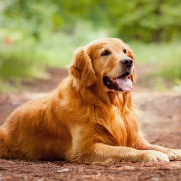
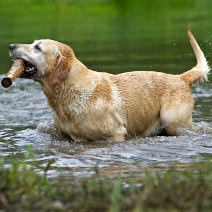
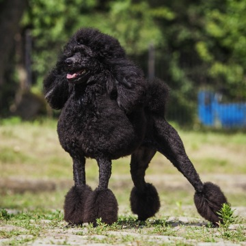
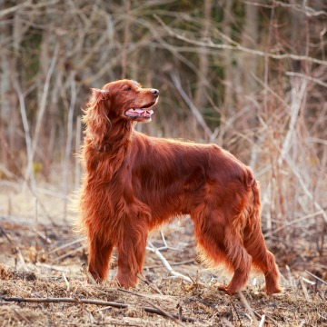
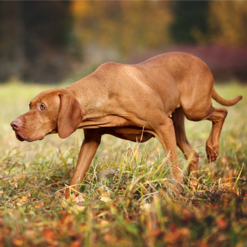
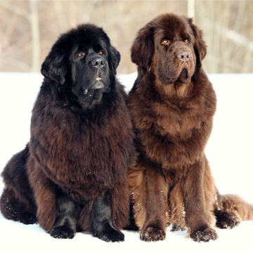
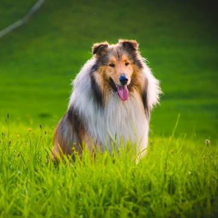
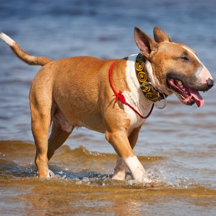
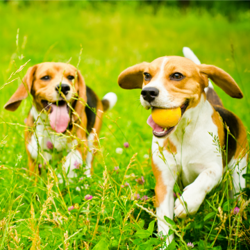
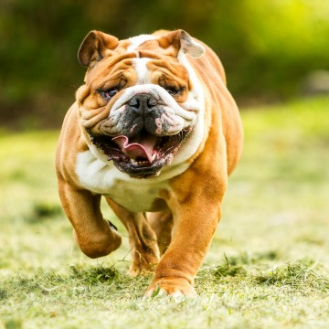

There's a reason why dogs have been called man's best friend. From licking your face when you wake up to sitting on your feet when your toes are cold, dogs serve as a gentle alarm clock and the best slippers you'll ever have. Own one and you might even take fewer trips to the doctor.
The 9 Health Benefits Of Dogs:
- Improve heart health
- Keep you fit and active
- Help you lose weight
- Improve your social life
- Reduce stress
- Add meaning and purpose
- Stave off depression
- Prevent grandkids’ allergies
- Reduce doctor visits
Here are the 10 best dogs for kids and families:
| Breed | Origin | Image |
|---|---|---|
| Golden Retriever | United Kingdom (Scotland) |  |
| Labrador Retriever | Canada, United Kingdom (England) |  |
| Poodle | Germany, France |  |
| Irish Setter | Ireland |  |
| Vizsla | Hungary |  |
| Newfoundland | Canada |  |
| Collie | United Kingdom (Scotland) |  |
| Bull Terrier | United Kingdom (England) |  |
| Beagle | United Kingdom (England) |  |
| Bulldog | United Kingdom (England) |  |